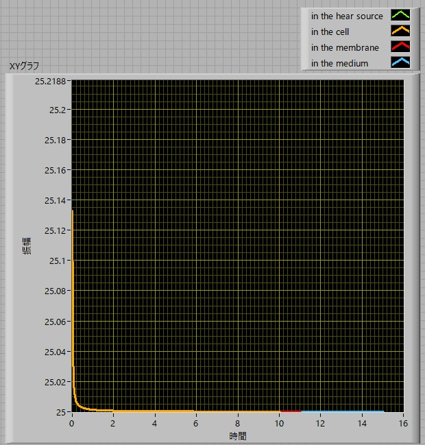

球体の発熱による温度分布-熱源が一様ではなく，中心に局在している場合-33
W=10 nW
R = 10 μm
Rheat source = 10 nm
Rmembrane = 1 μm
κin = 0.3 W/(m.K)
κmem = 0.6 W/(m.K)
κout = 0.6 W/(m.K)
R.T. = 25 ℃
を入れると，

となり，10nWだとしても，細胞中心では約0.14℃上昇します．
しかし，温度はすぐに減衰するので，これを細胞の温度上昇と言うには 難しいですね．．．．
最後に，細胞外の温度変化を見てみましょう．